74. Prefixes 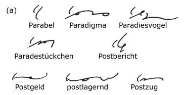 P above the line of writing represents PARA; on the line of writing it represents POST.
V represents VOR; N represents ENTR-, INTER, and HINTER. They are written above the line of writing. 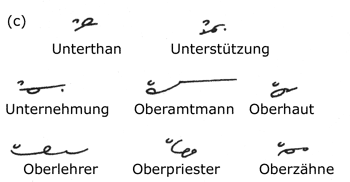 The U vowel represents the syllable UNTER and the O vowel the syllable OBER. They are written above the line of writing. 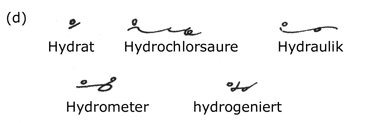 The E circle represents HYDR- and is written above the line. 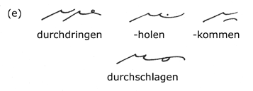 DURCH is represented by DR. It is preferably disconnected but may be joined where there is no fear of confusion. 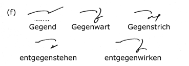 G stands for GEGEN, and N-G for ENTGEGEN, above the line of writing and disconnected. Gegend is the one exception. 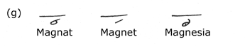 M, above the line, represents MAGN-. 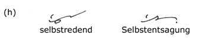 SELBST is represented by reverse S above the line of writing. 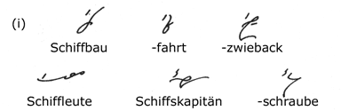 SCH represents SCHIFF and SCH-S represents SCHIFFS. They are written above the line of writing. 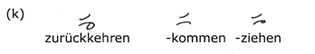 Reverse Z represents ZURÜCK; it is written above the line of writing. 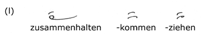 Forward Z represents ZUSAMMEN; it is written above the line of writing. 75. Prefixal Forms Alone 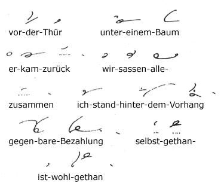 The words VOR, UNTER, ZURÜCK, ZUSAMMEN, HINTER, GEGEN, SELBST, are expressed by the prefixal forms written above the line of writing. When HINTER stands alone, the dot H is inserted. 76. Suffixes
K joined represents -KEIT. 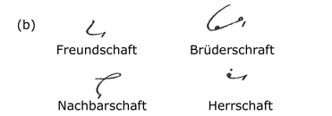 SCHAFT is represented by SCH, generally joined 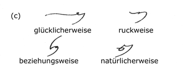 WEISE is represented by W, joined. 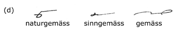 M stands for GEMÄSS, and is joined. The word gemäss standing alone is written in full. 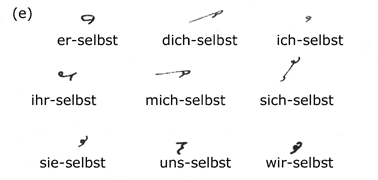 SELBST is represented by S. That S is used which joins the more readily. Standing alone selbst is put in full. 77. More Suffixes 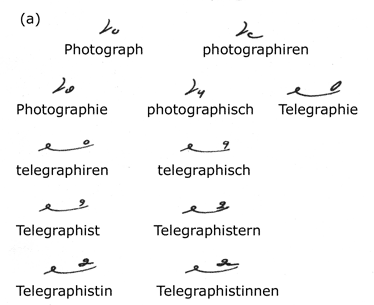 -OGRAPH is represented by the O hook, -EGRAPH by the small circle written above the last character. 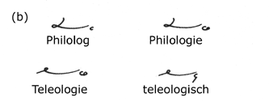 -OLOG is represented by the O hook placed on its side. Derivatives are formed by the addition of the extra letters. 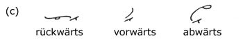 -WÄRTS is represented by TS disconnected. 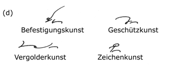 -KUNST is represented by K disconnected. 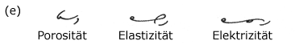 -SITÄT, -ZITÄT (with preceding vowel) are represented by S and Z disconnected. 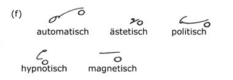 -TISCH (with preceding vowel) is represented by the large circle. 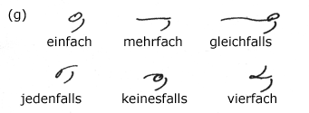 FACH and FALLS are represented by F disconnected. - Next Page - |